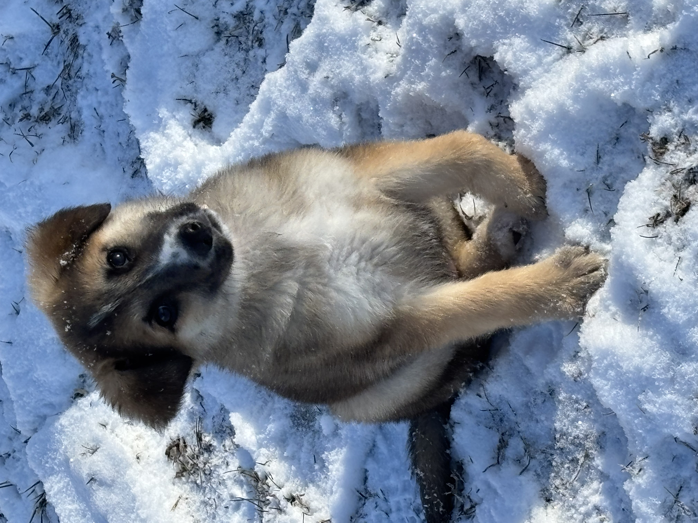
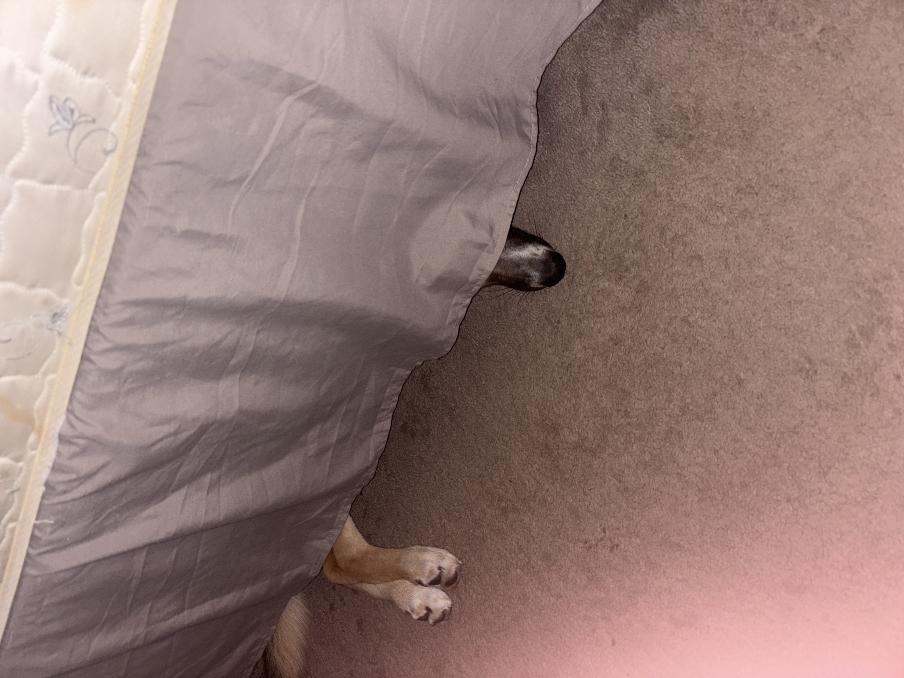
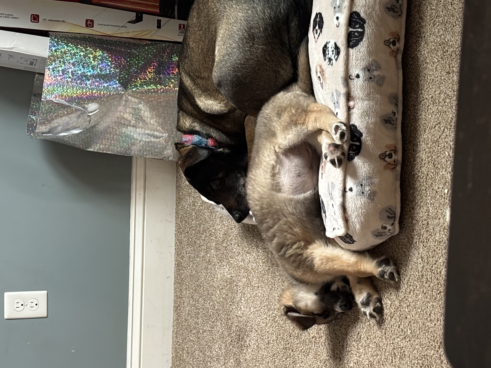
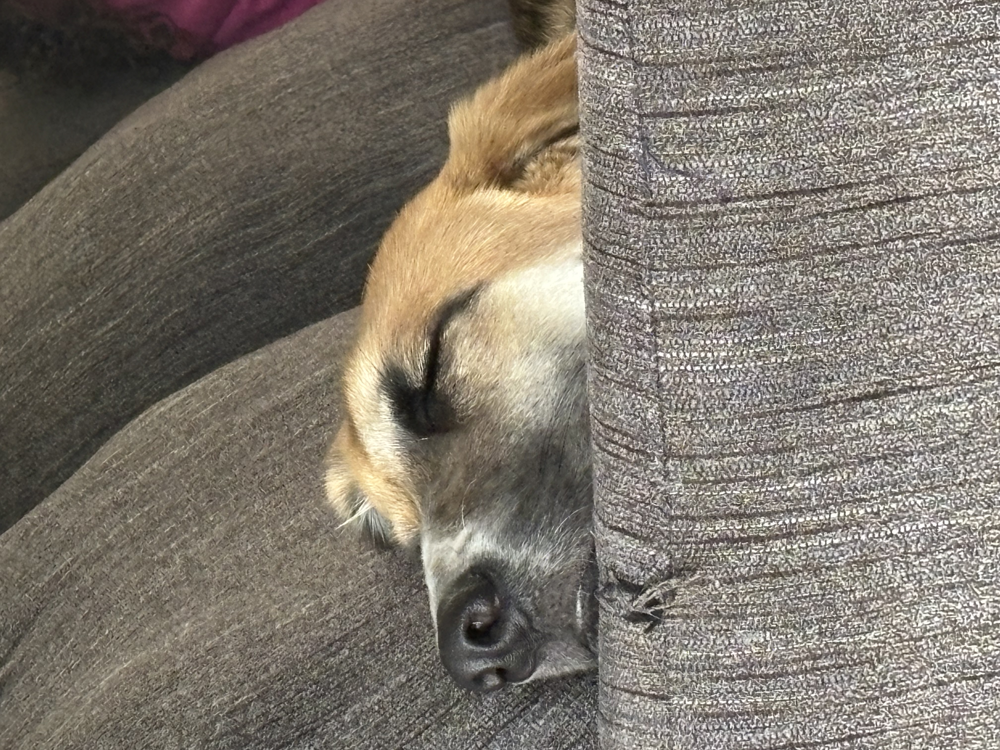

Puppy Care






Caring for a puppy requires a thoughtful balance of structure, patience, and attentiveness during a critical stage of development. In the early weeks, puppies rely heavily on consistency to feel secure in their new environment. Establishing routines for feeding, sleeping, and bathroom breaks helps them adapt more quickly and reduces stress. Providing a safe, designated space—such as a crate or play area—can also support both house training and a sense of security. Because puppies are naturally curious, it is important to puppy-proof the home by removing hazards and ensuring they can explore safely.
Proper nutrition is another essential component of puppy care. Puppies require a diet specifically formulated to support growth, including the right balance of protein, fats, vitamins, and minerals. Feeding schedules should be consistent, typically involving multiple small meals throughout the day rather than one large portion. Access to clean, fresh water at all times is equally important. Monitoring a puppy’s weight and overall condition helps ensure they are developing at a healthy rate and can alert owners to potential issues early.
Socialization and training play a crucial role in shaping a puppy’s behavior and temperament. Early exposure to different people, environments, and other animals helps reduce fear and anxiety later in life. Positive reinforcement techniques—such as rewarding good behavior with treats or praise—are highly effective for teaching basic commands and encouraging desired habits. Training should be approached with patience and consistency, as puppies are still learning how to interpret and respond to their surroundings.
Regular veterinary care is vital to maintaining a puppy’s health. This includes vaccinations, parasite prevention, and routine check-ups to monitor growth and development. Grooming should also begin early, even for breeds that require minimal maintenance, so the puppy becomes comfortable with brushing, bathing, and handling. By combining proper healthcare, nutrition, training, and a stable environment, owners can support their puppy’s transition into a healthy, well-adjusted adult dog.